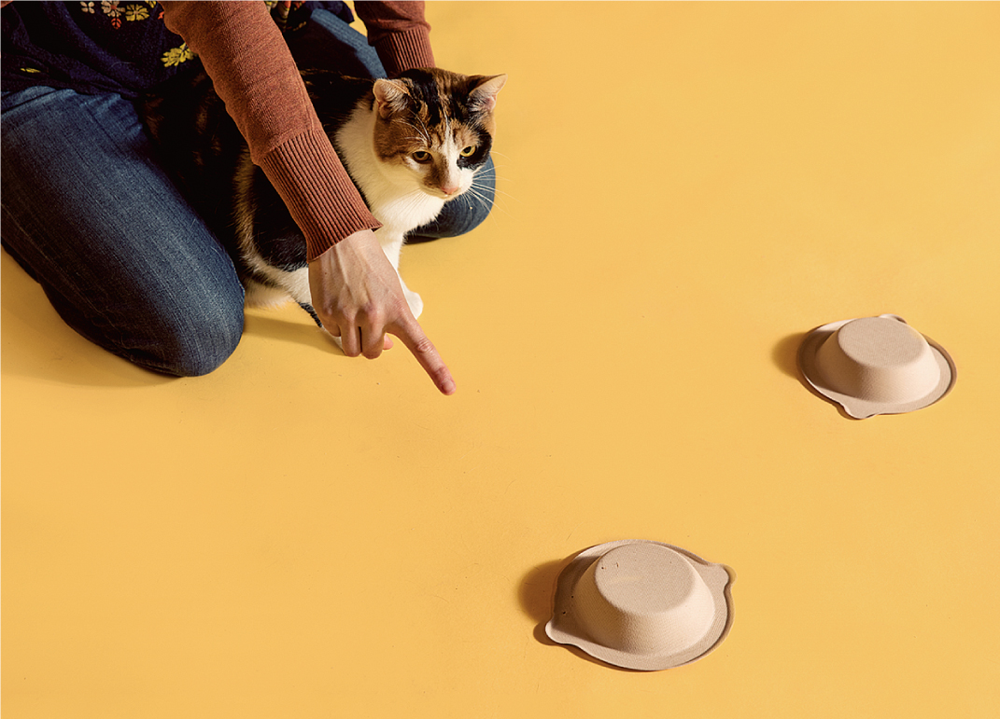
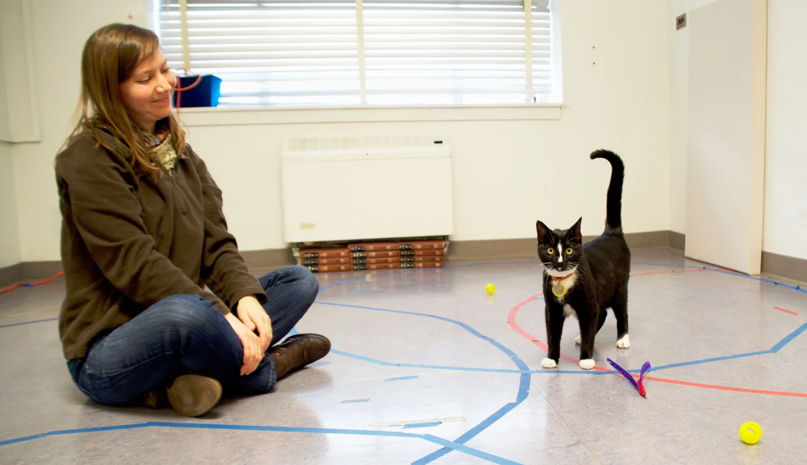
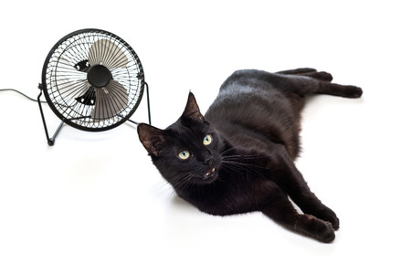
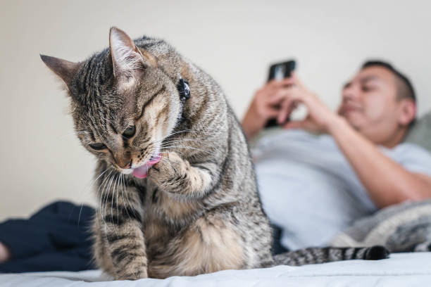
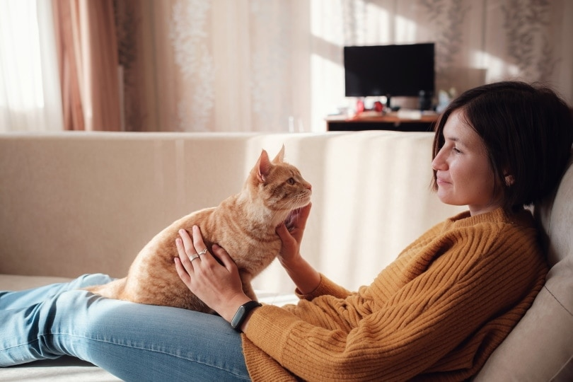

Gallery of Experiments
Click on the different images below to find about the discoveries of different studies on feline intelligence.





![A common social intelligence test is pointing. Toddlers know pointing means to look at something, but many animals, including chimpanzees, don't. Dogs drew worldwide acclaim when scientists realized that they could recognize the significance, but no one thought to try cats. In a little known 2005 study, cognitive ethologist Ádám Miklósi put cats to the test. He found that they did just as well as dogs-- when they didn't lose interest and walk away. Kristyn Vitale from Oregon State University found similar results many years later, sparking modern scientific interest in feline intelligence.](images/cat-point.jpg)
![Kristyn Vitale continued her research with other experiments. Human owner Clara brought her cat, Lyla, into an unfamiliar room and stayed with her for two minutes. Clara then left Lyla alone for another two minutes; Lyla became very distressed and cried for her owner. When Clara returned, Lyla then became very friendly and affectionate. After greeting Clara, she began exploring the rest of the room. Traditionally, many people have explained this independence as a disinterest in humans -- but now, Vitale shows that cats show independence like this because the mere presence of their owners gives cats the security to explore an unknown space. They trust us.](images/cat-room.webp)

![Overall, cats have more than exceeded society's expectation of them as antisocial descendents of antisocial ancestors. Péter Pongrácz, a colleague of Ádám Miklósi, proved that cats couldn't just follow a pointed finger, but rather a glance -- even if it was just split-second. Cats followed the gaze at the same rate as dogs, a solid 70%. Atsuko Saito showed cats know their own names, even when said by a stranger. Scientists have also found that cats know their owner's voice from a stranger, and even perceive some optical illusions similarly to humans. While cats often find laboratories tobe unfamiliar and stressful environments, and even at home commonly have little interest for our scientific &ldquogames”, it is believed that well-socalized and calm cats will perform just as well as dogs in any test of social smarts.](images/cat-stare.jpg)